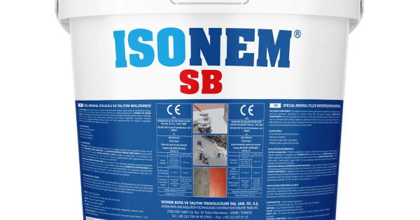
Su Yalıtımı
İsonem Yalıtım Teknolojileri
Fabrika Yetkili Bayi Dağıtım
•
Teras, Çatı, Zemin & Havuz
•
Urla & Balçova Depo
Kataloğu İncele

İsonem SB Süper Bileşen
Beton Teras & Çatı
•
%100 Su Geçirimsiz
•
Gezilebilir Zemin
Fiyat & Sarfiyat Sor

İsonem Liquid Glass
Fayans & Seramik Kırmadan
•
Şeffaf Sıvı Cam
•
Cam Parlaklığı & Yalıtım
Uygulama Danış

İsonem Thermal Paint
Termal Isı Yalıtımı
•
%40 Enerji Tasarrufu
•
Rutubet & Küf Önleyici
Fiyat & Renk Sor

İsonem MS Polymer
Hibrit Saf Polimer
•
UV Dirençli Membran
•
Göllenme Sularına Dayanıklı
Stok Durumu Öğren
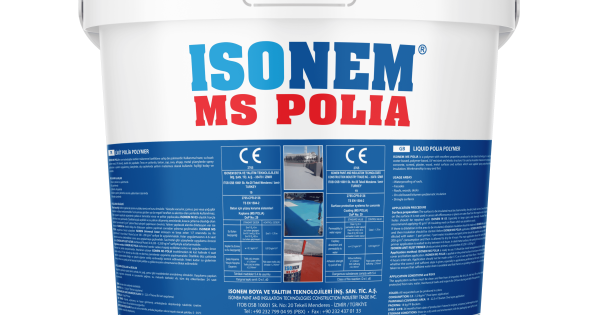
Su Yalıtımı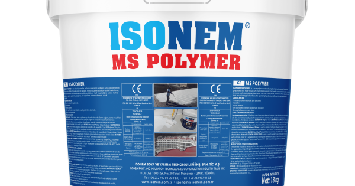
Su Yalıtımı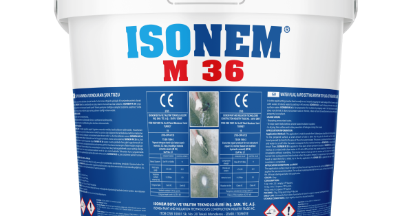
Su Yalıtımı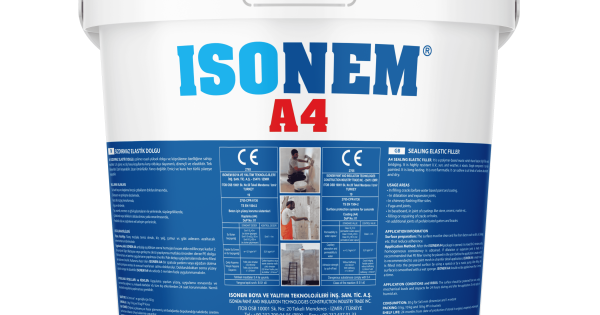
Su Yalıtımı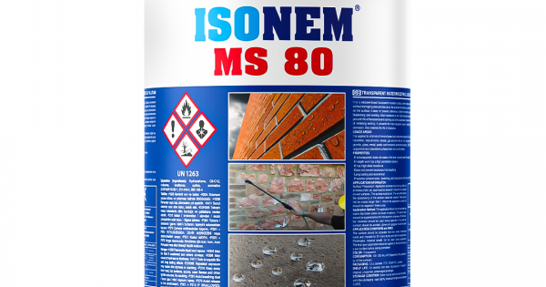
Su Yalıtımı
Su Yalıtımı
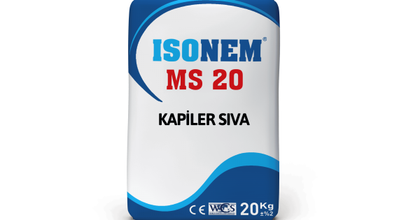
Su Yalıtımı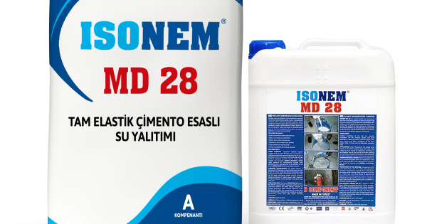
Su Yalıtımı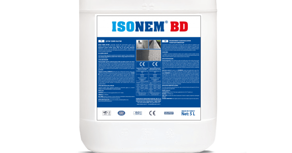
Su Yalıtımı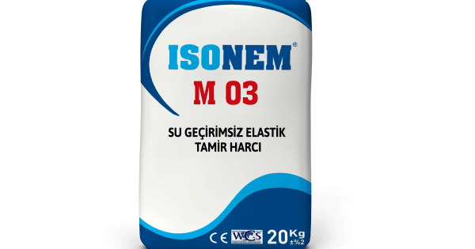
Su Yalıtımı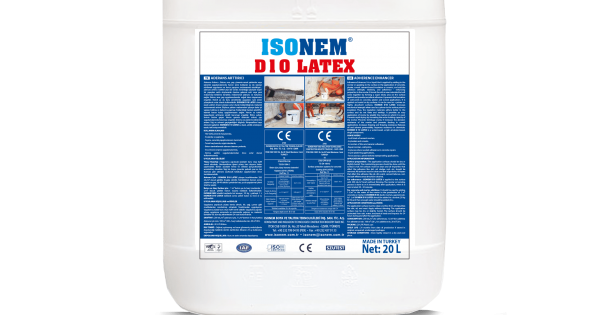
Su YalıtımıISONEM D 10 LATEX
Her türlü çimento harçlarında, Sıvalarda ve şaplarda, Fayans, seramik yapıştırıcılarının harcında, Tamir harçlarında, soğuk derzlerde, Beton tamiratlarında aderans istenen yerlerde, Sıva öncesi serpme uygulamalarında, Sürme yalıtım uygulamalarından önce astar olarak kullanılmasın...
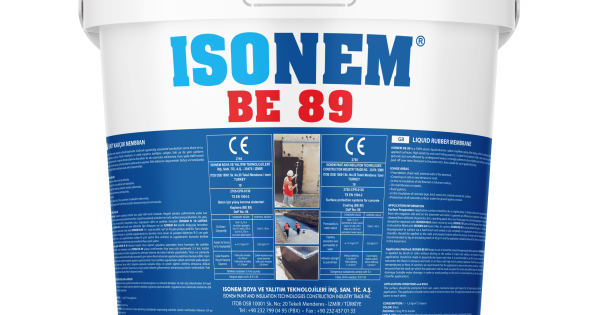
Su Yalıtımı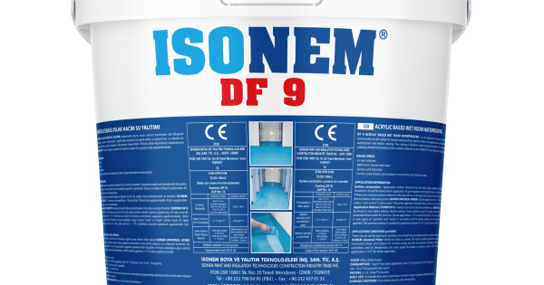
Su Yalıtımı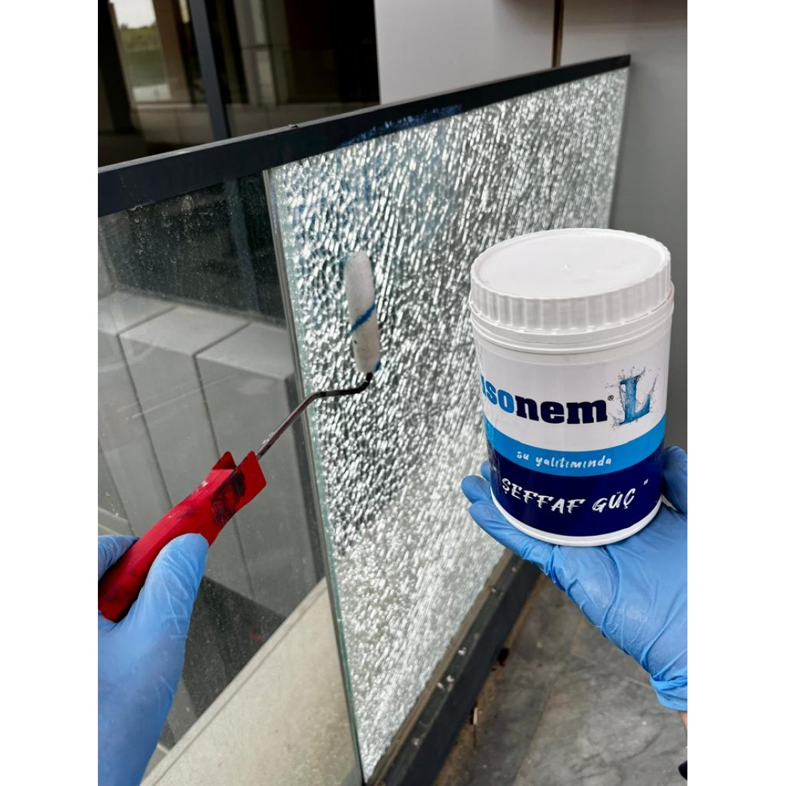
Su Yalıtımı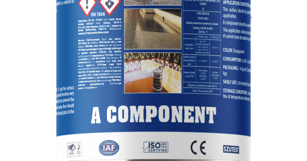
Zemin KaplamaISONEM LIQUID GLASS
Cam, cam tuğla, mozaik, karo mozaikte, Fayans, seramik, mermer, granit, doğal taş, porselen yüzeyler Pres tuğlalarda, Ahşap yüzeylerde, Balkon, teras, banyo, mutfak, taş kaplı dış cephelerde. Seramik, cam mozaik kaplı süs havuzlarında. Emici yüzeylerde tozumayı engellemeye yardım...
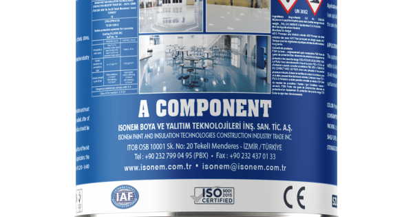
Zemin Kaplama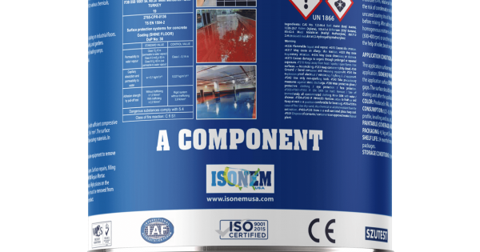
Zemin KaplamaISONEM SHINE FLOOR
Üretim ve depolama tesisleri, imalathaneler vb. yerlerde bulunan endüstriyel zeminlerde düzgün yüzeyli kaplama olarak, havuz kenarları, turistik tesisler, sahil şeridi, yürüme yolları, meydanlar, kaldırımlar, parklar ve bahçelerde, ıslak çalışma alanları (gıda ve içecek sanayi vb...
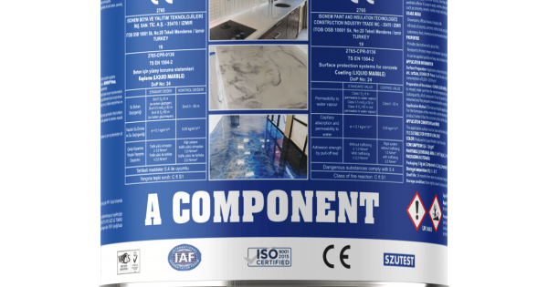
Zemin Kaplama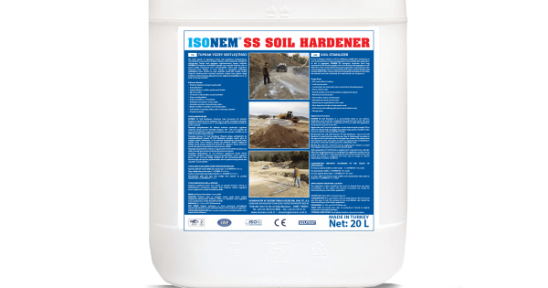
Zemin KaplamaISONEM SS SOIL HARDENER
Üzerinde kaplama olmayan toprak yollar Arazi iyileştirme Şantiye alanları ve yolları, şantiye park alanları Ağır taşıt yolları Yol temeli ve alt temeller, otoyol banketleri Depo ve stok yığınları Enerji santralleri, ev ve banketler Helikopter test pistleri, orman yolları Havaala...
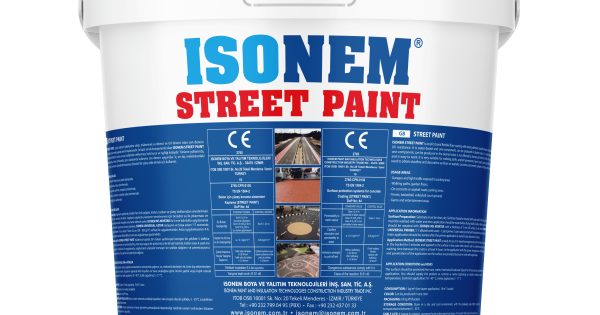
Zemin Kaplama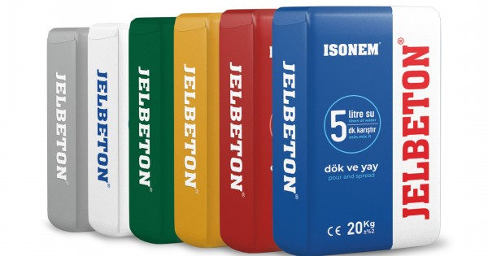
Zemin Kaplama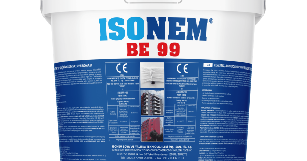
Özel Boya & Isı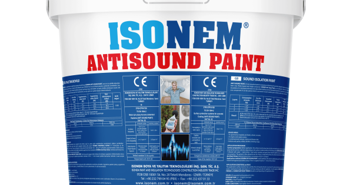
Özel Boya & Isı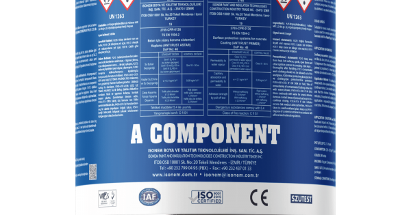
Özel Boya & Isı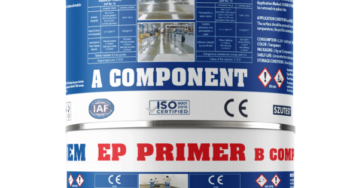
Özel Boya & Isı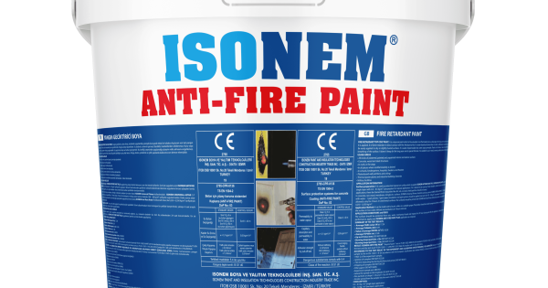
Özel Boya & IsıISONEM ANTI FIRE PAINT
Her türlü sıvalı, boyalı ve boyasız iç ve dış yüzeylerde, beton, ahşap ve çelik yapılarda, çatılarda, yangın merdivenlerinde, yanmazlık istenen tüm mekanlarda, okul, kreş, hastane, tiyatro ve sinema salonlarında, alçıpan duvar bölmeleri ve tavanlarda, bacalarda, termik santral ve...
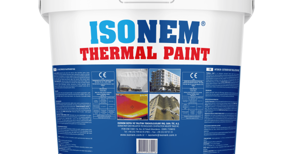
Özel Boya & Isı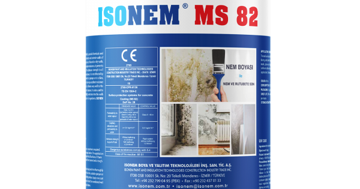
Özel Boya & Isı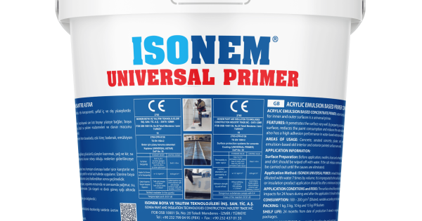
Özel Boya & Isı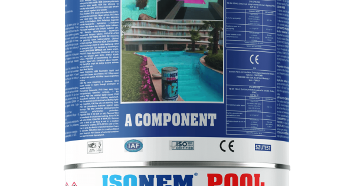
Özel Boya & Isı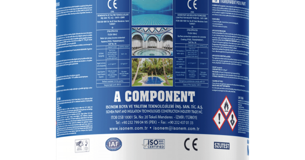
Özel Boya & Isı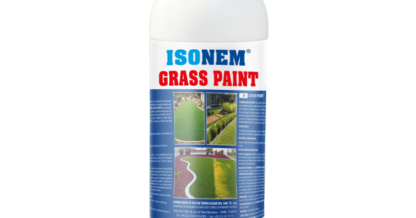
Özel Boya & Isı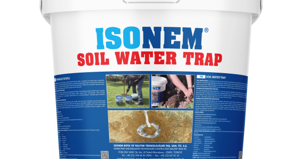
Endüstriyel ÇözümISONEM SOIL WATER TRAP
Fidan dikimi ,fide üretimi Mevcut ağaçlarda uygulama Çilek üretimi, kavun, karpuz, kabak uygulaması Tarla tarımı (Hububat, haşhaş, pancar, mısır, pamuk, ayçiçeği, patates fasulye vs.) Çim ve peyzaj uygulamaları Kesme çiçekçilik Saksı çiçekçiliği,Yonca ve yem bitkileri uygulaması ...
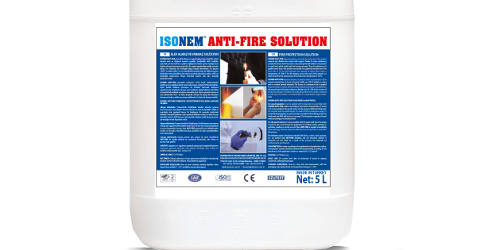
Özel Boya & Isı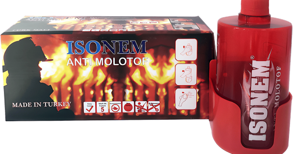
Özel Boya & IsıISONEM ANTI MOLOTOF
İdeal kullanım alanları kapalı ve açık alanlardır. Her türlü başlangıç yangınları için kullanılabilir. Gemiler, evler, okullar, taşıtlar ve askeri tesisler, benzin istasyonları, fabrikalar kısacası her yer için oldukça elverişli bir yangın söndürücüdür. DİKKAT ! Yangın başlangıcı...
MERKEZLERİMİZ & DOĞRUDAN TEDARİK
Daha Fazlası, Özel Yalıtım Çözümü & Hızlı Tedarik İçin
Katalogda yer almayan özel İsonem serileri, şeffaf sıvı cam numuneleri veya doğrudan şantiyenize sevkiyat için merkezlerimize ulaşın.
YAPI MARKET & RENXMATİK
Balçova Yapı Market & RenXMatik Laboratuvarı
İsonem su yalıtım ve sıvı cam ürünleri, Filli Boya RenXMatik™ renk laboratuvarı ve perakende yapı market.
Eğitim Mah. Dalya 1 Sk. No:5/A, Balçova / İzmir
Haftanın 7 Günü Açık: 08:30 – 19:30 (Pazar Dahil)
Telefon: 0 (232) 278 43 40
ANA LOJİSTİK DEPO & ŞANTİYE DAĞITIM
Urla Ana Lojistik Deposu
Paletli malzeme teslimatı, tır ve kamyonet yükleme sahası, Yarımada (Urla, Çeşme, Seferihisar, Karaburun) şantiye sevkiyatı.